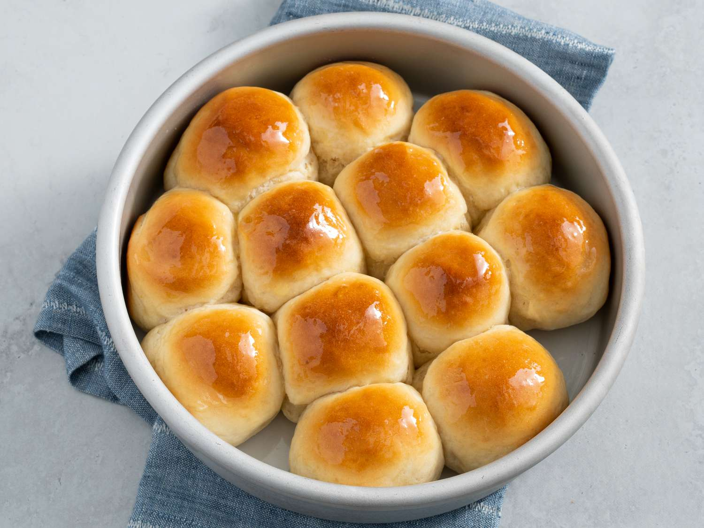

Dinner Roll

Description
These homemade rolls are so soft, light, and fluffy, with a hint of
sweetness and the best homemade flavor.
Ingredients:
- 1 cup warm milk
- 2 1/4 tsp active dry yeast
- 2 tbsp honey
- 2 tsp cornstarch
- 1 tsp salt
- 1 large egg
- 4 tbsp unsalted butter
- 3 1/4 cups all-purpose flour
- Butter topping (1 tbsp salted butter + 1 tbsp honey)
Steps:
-
Combine the warm milk and yeast in the stand mixer bowl. Stir in
1 tbsp of honey. Cover with plastic wrap and let sit for 5-10 mins.
It's ready when you see foam on the top.
-
Stir in the remaining honey, cornstarch, salt, egg, butter, and 1/3
of the flour. Mix on low speed with the paddle attachment. Add the
remaining flour gradually, while mixing, for 30s.
-
Beat on medium-low speed for 2 mins with the dough hook. The dough
should still be sticky, but manageable.
-
Dust your hands with flour and kneed the dough for 3 mins.
-
Use a silicone spatula to scrape the dough out and transfer it to
a large, lightly creased bowl. Cover with plastic wrap and let it
rise in a warm place until doubled in size, for about 1-2 hours.
-
Punch the dough down to release the air. Shape into 15 tight, smooth
balls of equal size. Place in a lightly greased 9x13 in baking dish.
-
Cover with plastic wrap and let rise in a warm place for 1 hour, until
doubled in size.
-
Preheat oven to 375 degrees F.
-
Bake for 18 mins.
-
Brush the tops with the honey butter sauce. Bake for 3-5 mins until the
tops are golden brown. Cool and serve warm.